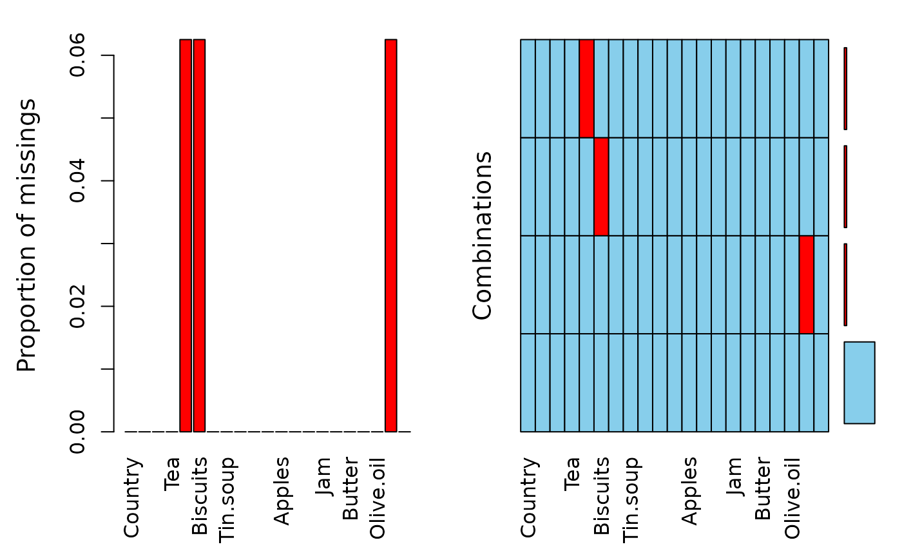

The relative consumption of certain food items in European and Scandinavian countries.
A data frame with 16 observations on the following 21 variables.
The numbers represent the percentage of the population consuming that food type.
data(food)
str(food)
#> 'data.frame': 16 obs. of 21 variables:
#> $ Country : chr "Germany" "Italy" "France" "Holland" ...
#> $ Real.coffee : int 90 82 88 96 94 97 27 72 55 73 ...
#> $ Instant.coffee: int 49 10 42 62 38 61 86 26 31 72 ...
#> $ Tea : int 88 60 63 98 48 86 99 77 61 85 ...
#> $ Sweetener : int 19 2 4 32 11 28 22 2 15 25 ...
#> $ Biscuits : int 57 55 76 62 74 79 91 22 29 31 ...
#> $ Powder.soup : int 51 41 53 67 37 73 55 34 33 69 ...
#> $ Tin.soup : int 19 3 11 43 23 12 76 1 1 10 ...
#> $ Potatoes : int 21 2 23 7 9 7 17 5 5 17 ...
#> $ Frozen.fish : int 27 4 11 14 13 26 20 20 15 19 ...
#> $ Frozen.veggies: int 21 2 5 14 12 23 24 3 11 15 ...
#> $ Apples : int 81 67 87 83 76 85 76 22 49 79 ...
#> $ Oranges : int 75 71 84 89 76 94 68 51 42 70 ...
#> $ Tinned.fruit : int 44 9 40 61 42 83 89 8 14 46 ...
#> $ Jam : int 71 46 45 81 57 20 91 16 41 61 ...
#> $ Garlic : int 22 80 88 15 29 91 11 89 51 64 ...
#> $ Butter : int 91 66 94 31 84 94 95 65 51 82 ...
#> $ Margarine : int 85 24 47 97 80 94 94 78 72 48 ...
#> $ Olive.oil : int 74 94 36 13 83 84 57 92 28 61 ...
#> $ Yoghurt : int 30 5 57 53 20 31 11 6 13 48 ...
#> $ Crisp.bread : int 26 18 3 15 5 24 28 9 11 30 ...
aggr(food)
